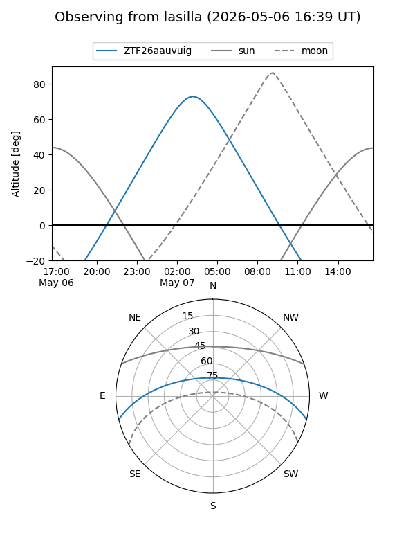
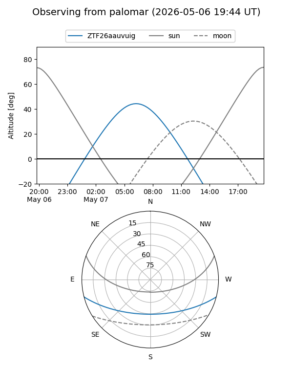

ZTF26aauvuig
Target ZTF26aauvuig at 2026-05-07 07:16
Aliases and brokers:
FINK: link
Lasair: link
ALeRCE: link
alt names
ZTF26aauvuig (ztf,fink_ztf)
Coordinates:
equatorial (ra, dec) = 201.6551,-12.10306
equatorial (HMS+DMS) = 13:26:37.23,-12:06:11.00
galactic (l, b) = (316.3397,+49.85056)
Flags:
Photometry:
last ztfg=19.88
1 ztfg detections
Lightcurve
Visibility


Additional plots